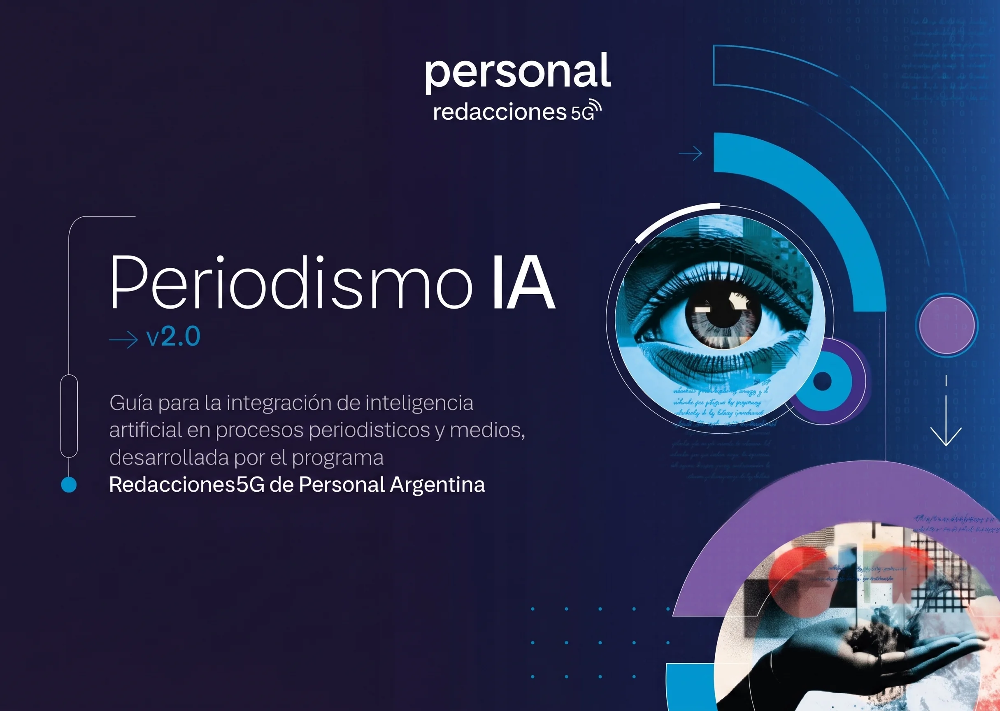

Portada · v2.0

Documento descargable
La guía completa, en un solo PDF
Los siete capítulos de PeriodismoIA 2026 reunidos en una edición integral en PDF, lista para descargar, imprimir y compartir. Pensada para circular en reuniones editoriales, consultar offline o trabajar en equipo. Incluye el relevamiento internacional, recursos complementarios, bibliografía y la propuesta de directrices para integrar inteligencia artificial en redacciones.
- 7 capítulos completos
- Versión imprimible
- Bibliografía completa
- Propuesta de directrices
Próximamente disponible
La versión final del PDF está en edición. Cuando esté lista, este botón habilitará la descarga directa.